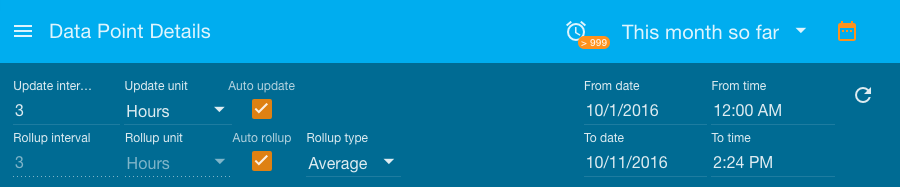
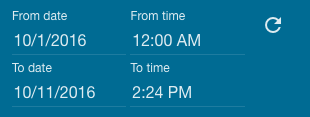
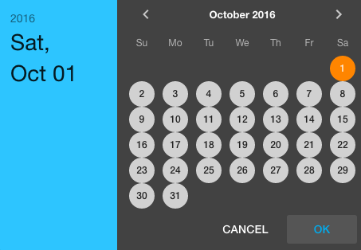
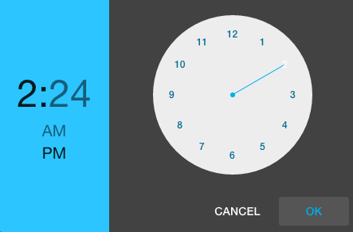
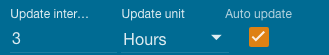

The Date Bar is used to manually override the selected time range in the Header Bar.
Currently the Date Bar is used by the Watch List, Data Point Details, and Events Page
(all pages in /ui/ where date settings apply).
To the right of the time period selector in the Header Bar is a Calendar Icon:

Clicking this icon will expand or hide the Date Bar.
The Date Bar can be used to set a specific range of dates and times.
Clicking any of the date inputs will allow you to select from a Calendar popup:
Clicking on the time inputs will allow you to select from a Clock popup:

Rollups are used to make sure a reasonable amount of data is displayed on charts and
point value history tables. Rollup settings will be
shown in the Date Bar if they can be used by the current page.
For instance, rollup settings will not show on the Events Page as they do not apply to that page.
By default Auto rollup settings will be used but if you
turn off Auto rollup you can manually specify a rollup interval. Changing Rollup type
allows you to view rollups other than Average, such as Delta, Maximum and Minimum.
If you have a data point selected on the Data Point Details page which is not Numeric, the
Rollup type will automatically be set to None and only certain types will be available.
If you don’t manually specify a date range, then you are using one of the preset ranges in the Header Bar (such as "Last 5 minutes") you will see the update interval options.

When Auto update is checked, the time range will refresh on the given Update interval
and re-query values to use in the charts and history tables.
Whether Auto update is selected or not, you can click the reload icon on the far right
of the Date bar to cause a refresh of the time range selected and load the latest data:
The Events Page help describes the option to disable date filtering on the events page.